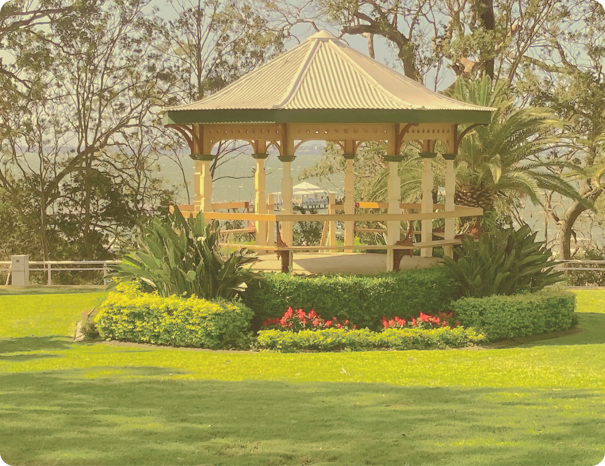
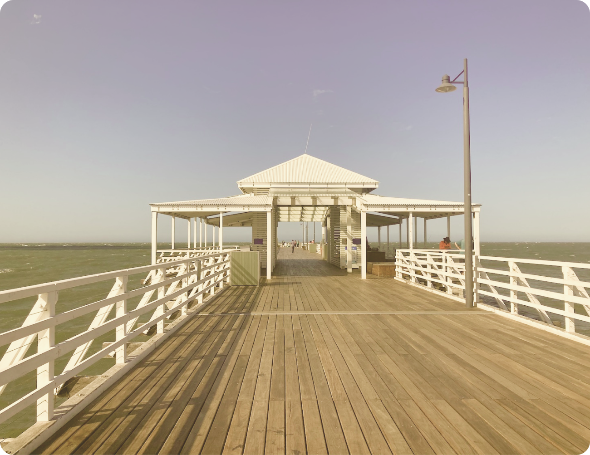
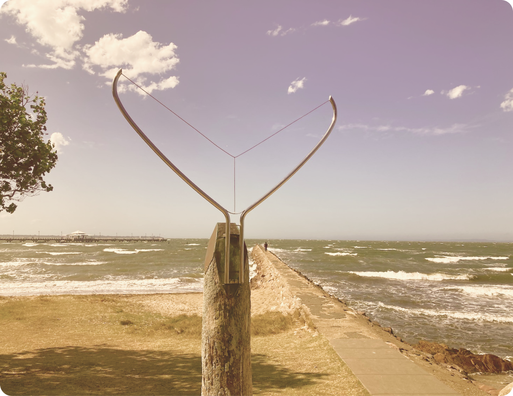
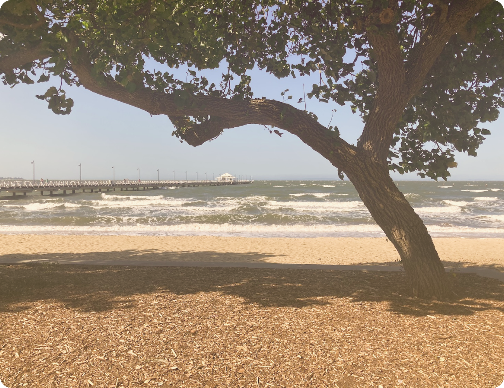
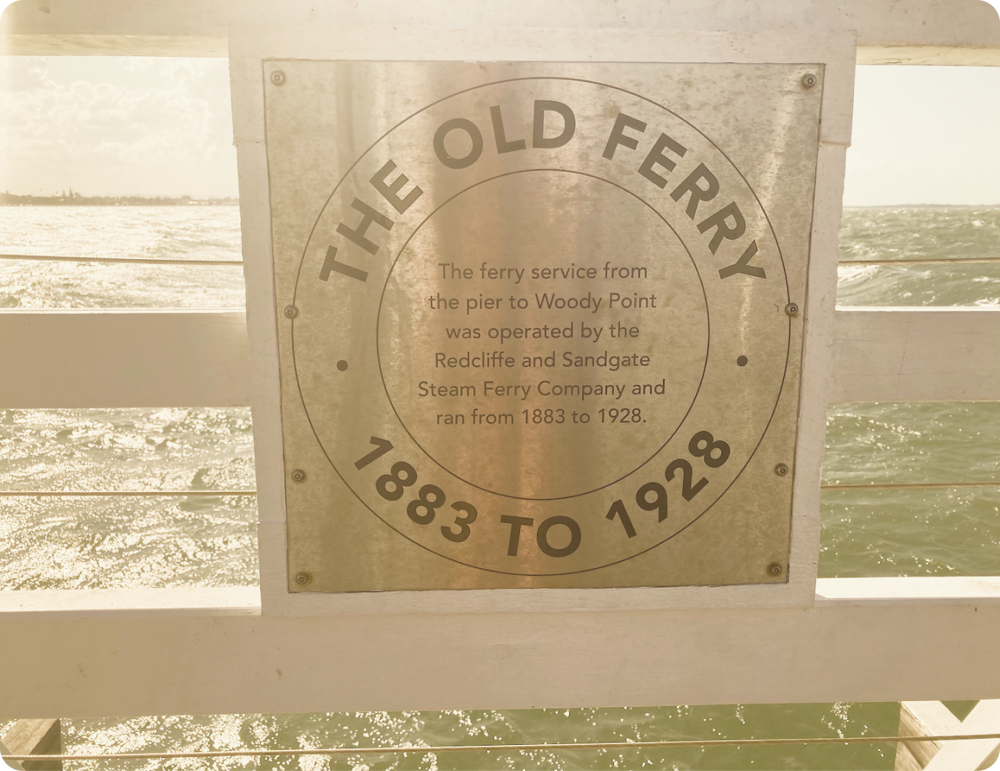

Perched on top of the hill in Shorncliffe you’ll find Moora Park, with parking and walking access to Shorncliffe Pier. The park is a popular weekend picnic location with Preece’s cafe located across the road.
The pier itself is a popular walking and fishing location. The pier marks the end of Lovers’ Walk which wraps around the bay. From the end of the pier it’s sometimes possible to see small bay dolphins.
The foreshore is home to a number of artworks and sculptures as well as a modern kids adventure playground. Perfect for the grandkids to burn some energy!s.
There is always a strong breeze on the bay making the area from Brighton in the North, through Sandgate and Shorncliffe popular with kite surfers.
You can hire kites and take lessons here.The pier is also a popular swimming spot and home to the popular Victorian Era sea baths. You can still make out the shape of the baths and enjoy the sun on the small beach.
The area around Shorncliffe Pier features a number of historic plaques and photographs, harking back to the Victorian Era when Sandgate was a popular seaside holiday destination for the people of Brisbane.
